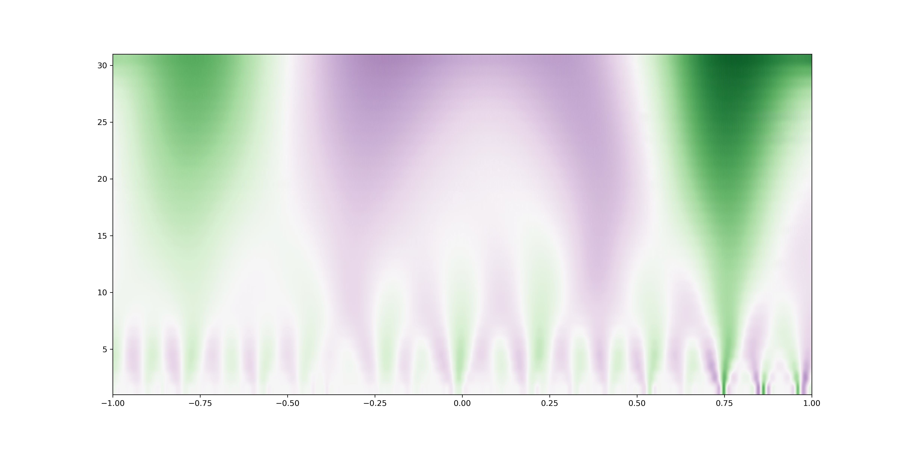

I am an engineer specializing in Machine-to-Machine (M2M) data and timeseries data
analysis.
Projects

Anomaly Detection
Use distortion introduced by PCA compression to detect anomaly in time series of refrigeration temperatures.
Learn moreAnomaly Detection
Use distortion introduced by PCA compression to detect anomaly in time series of refrigeration temperatures.
Learn more